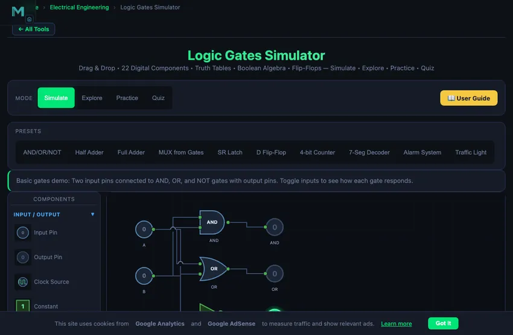

Logic Gates Simulator
Drag & Drop • 22 Digital Components • Boolean Expression → Circuit Converter • Truth Tables • Timing Diagrams • Flip-Flops — Simulate • Explore • Practice • Quiz
1 Overview
Welcome to the Logic Gates Simulator — a free, browser-based digital logic simulator designed for electronics students, computer engineering learners, vocational instructors, and anyone studying digital systems. This tool provides interactive circuit building with 22 digital components, automatic truth table generation, real-time Boolean expression derivation, and comprehensive learning modes — all without installation, signup, or licensing fees.
The simulator features 8 basic logic gates (AND, OR, NOT, NAND, NOR, XOR, XNOR, Buffer), 4 combinational components (MUX, DEMUX, Decoder, Encoder), 4 sequential elements (SR Latch, D/JK/T Flip-Flops), input/output pins, clock source, 7-segment display, and probe. It includes 10 preset circuits, a Boolean expression → circuit converter, a live timing diagram, Save/Open circuit files, and 4 interactive learning modes (Simulate, Explore, Practice, Quiz).
2 Setting Up the Problem
Select components from the collapsible palette on the left. Click a component to place it on the canvas, or drag it directly. Click on port circles to create connections (wires) between components. Click the Run button to start the simulation and watch logic signals propagate through your circuit with colour-coded wires (green = HIGH, grey = LOW).
Load a preset circuit (AND/OR/NOT, Half Adder, Full Adder, MUX from Gates, SR Latch, D Flip-Flop, 4-bit Counter, 7-Seg Decoder, Alarm System, or Traffic Light) to instantly study a working configuration. Toggle input pins during simulation to see how outputs change in real time. The truth table and Boolean expression update automatically.
Or skip the drawing entirely: type a Boolean expression such as A'B + BC into the Expression box and click Build Circuit — the simulator acts as a logic circuit generator, placing and wiring the gates for you. Syntax: ' = NOT, · / & / adjacency = AND, + / | = OR, ^ = XOR, with parentheses for grouping (up to 6 variables, 30 gates).
2b Timing Diagram & Save/Open
The Timing Diagram panel records live waveforms while the simulation runs — clock sources (amber), input pins (blue), and output pins (green), up to 8 signals over a rolling 8-second window. Use it to see flip-flop edge-triggering and counter frequency division. Toggle it with the 📈 Timing button; the trace freezes when you press Stop so you can study or screenshot it.
💾 Save downloads your circuit as a portable logic-circuit.json file — ideal for homework submissions and lesson libraries. 📂 Open loads a saved file back onto the canvas. 🔗 Share copies a link that encodes the whole circuit in the URL, so anyone who opens it sees your exact design without an account. </> Embed copies an iframe snippet for websites and LMS pages (Moodle, Canvas, Google Sites) — the embedded view is chrome-less and includes your current circuit.
3 Component Library — 22 Digital Components
Input/Output (4): Input Pin (toggleable HIGH/LOW), Output Pin (LED indicator), Clock Source (adjustable frequency square wave), Constant (fixed 0 or 1).
Basic Gates (8): AND (output 1 when all inputs are 1), OR (output 1 when any input is 1), NOT/Inverter (complements input), NAND (inverted AND — universal gate), NOR (inverted OR — universal gate), XOR (output 1 when inputs differ), XNOR (output 1 when inputs match), Buffer (passes signal unchanged, used for fan-out).
Combinational (4): MUX 2:1 (selects one of two inputs), DEMUX 1:2 (routes input to one of two outputs), Decoder 2:4 (activates one of four outputs based on 2-bit address), Encoder 4:2 (encodes four inputs into 2-bit binary).
Sequential (4): SR Latch (Set-Reset memory element), D Flip-Flop (data storage, edge-triggered), JK Flip-Flop (versatile toggle/set/reset), T Flip-Flop (toggles on each clock edge — basis of counters).
Utility (2): 7-Segment Display (shows hexadecimal digit from 4-bit input), Probe (displays signal value at any point in the circuit).
4 Simulation & Truth Tables
Click Run to start the simulation. Wires turn green for logic HIGH (1) and remain grey for logic LOW (0). Toggle input pins by clicking them during simulation to observe how outputs respond. The simulator automatically propagates signals through all connected gates.
The Truth Table panel auto-generates the complete truth table for your circuit, listing all input combinations and their corresponding outputs. The Boolean Expression display shows the simplified algebraic expression derived from your circuit. Use these tools to verify your designs and understand the relationship between circuit topology and Boolean logic.
For sequential circuits, use the Clock Source component to drive flip-flops. Adjust the clock frequency in the properties panel. The I/O panel provides a compact view of all input toggles and output LED indicators.
5 Keyboard Shortcuts
Shortcuts: Space = Run/Stop, Ctrl+Z = Undo, R = Rotate, D = Duplicate, Delete = Delete, Escape = Cancel.
6 Tips & Tricks
- Use NAND gates only to build any logic function — NAND is a universal gate.
- Connect a NOT gate by wiring a single input to a NAND gate with both inputs tied together.
- Build a half adder with one XOR gate (sum) and one AND gate (carry).
- Add a probe to intermediate wires to debug complex circuits.
- Use T flip-flops in series to build binary counters — each stage divides the clock frequency by 2.
- Check the truth table to verify your circuit matches the expected Boolean function before moving on.
- Right-click any component for quick access to Info, Duplicate, Rotate, and Delete options.
Logic Gates Simulator — Build and Learn Digital Circuits Online

Why NAND Is the Universal Gate
Any Boolean function can be built from just NAND gates. AND? Two NANDs. OR? Three NANDs. NOT? One NAND with inputs tied together. This universality is not academic; it has real economic consequences. CMOS NAND gates need 4 transistors to build. Most digital chips therefore implement their internal logic predominantly with NAND-equivalent structures. The 7400-series TTL family is named after the first NAND chip (7400 = quad 2-input NAND). The 74-series legacy still defines the way every electronics undergraduate first learns logic.
De Morgan’s Theorems — The Single Most Useful Simplification
NOT(A AND B) = NOT(A) OR NOT(B). NOT(A OR B) = NOT(A) AND NOT(B). These two identities (De Morgan, 1850) are the most-used rewrites in digital design. They let you push inversions through gate inputs, swap AND-OR forms with NAND-NAND forms, and reduce gate counts in real circuits. Combined with absorption (A + AB = A), De Morgan is the basis of Karnaugh-map minimisation that takes a 16-input function from 100 gates down to 20.
Propagation Delay — The Speed Limit You Cannot Wish Away
Every real gate has a propagation delay — the time between an input transition and the output transition. For 74HC CMOS at 5 V, propagation delay is typically 10 ns; for modern 74LVC at 1.8 V, about 3 ns; for state-of-the-art digital logic in a 7 nm process, well under 1 ps per stage. Cascading 100 gates in series produces 100× delay. Long combinational chains limit clock frequency — the path from one flip-flop to the next must settle in less than one clock period. This is why modern processors have so many pipeline stages: each is short enough to complete in one clock cycle.
References
- Mano, M. M. & Ciletti, M. D. — Digital Design, 6th ed.
- Rabaey, J. M. — Digital Integrated Circuits, 2nd ed. The bridge from logic gates to CMOS transistor implementations.
- Texas Instruments — 74-Series Logic Family Specifications.
- IEC 60617 — Graphical symbols for diagrams. The international standard for gate symbols.
A logic gate is the fundamental building block of digital electronics. Logic gates take binary inputs (0 or 1) and produce a binary output based on a defined Boolean function. This free logic gates simulator and logic circuit simulator lets you build digital circuits with 22 components, convert Boolean expressions into circuits automatically, generate truth tables, and watch live timing diagrams — all in your browser without installation.
Convert a Boolean Expression to a Logic Circuit
Instead of dragging gates one by one, you can use this tool as a Boolean expression to logic circuit converter. Type an expression such as A'B + BC, (A+B)·C', or A^B into the Expression box and click Build Circuit. The parser supports NOT (postfix ' or prefix !), AND (·, &, or simple adjacency as in written Boolean algebra), OR (+), XOR (^), constants 0/1, and nested parentheses. The simulator then works as a logic gate generator: it places the input pins, chooses and wires the gates, connects the output, and immediately shows the truth table and the derived expression, so you can verify a Karnaugh-map simplification or homework answer in seconds.
Use It as a Logic Circuit Maker and Diagram Tool
Because every gate uses standard distinctive-shape symbols, the canvas doubles as a logic gate maker for creating clean circuit diagrams. Draw or generate the circuit, then right-click to export a PNG of the schematic for reports and slides, export the truth table as CSV, save the design as a .json file, or copy a shareable link that reproduces the exact circuit for classmates and students.
Embed This Simulator in Your Website or LMS
Teachers and course authors are welcome to embed this logic gate simulator free of charge in websites, Moodle, Canvas, Google Sites, or any LMS that accepts an iframe. Click the </> Embed button in the toolbar to copy a ready-made snippet — if you have built a circuit, the snippet reproduces that exact circuit for your students. Or paste this directly:
<iframe src="https://nhitvisuallab.org/tools/logic-gates/?embed=1"
width="100%" height="640" loading="lazy" allowfullscreen
style="border:1px solid #ccc;border-radius:8px;"
title="Logic Gate Simulator by NHIT VisualLab"></iframe>The embedded view is chrome-less (no navigation, articles, or ads) and keeps all four learning modes, the expression converter, truth tables, and the timing diagram fully interactive.
Reading the Timing Diagram
A timing diagram plots each signal's logic level against time and is the standard way to analyse sequential circuits. While your simulation runs, the timing panel traces every clock (amber), input (blue), and output (green). Watch a D flip-flop capture data only on the rising clock edge, or cascade T flip-flops and see each stage's waveform at exactly half the frequency of the one before it — frequency division made visible.
What Are Logic Gates?
Logic gates are electronic circuits that implement Boolean functions. The AND gate outputs 1 only when all inputs are 1. The OR gate outputs 1 when at least one input is 1. The NOT gate (inverter) flips the input: 0 becomes 1 and 1 becomes 0. These three form the basis of all digital logic. The NAND gate (NOT-AND) and NOR gate (NOT-OR) are called universal gates because any Boolean function can be constructed using only NAND gates or only NOR gates. The XOR gate (exclusive OR) outputs 1 when inputs differ, making it essential for arithmetic circuits like adders and parity checkers.
Boolean Algebra and Logic Simplification
Boolean algebra provides the mathematical framework for analysing and simplifying digital circuits. Key laws include the identity law (A·1=A), complement law (A·A′=0), and De Morgan’s theorems: (A·B)′=A′+B′ and (A+B)′=A′·B′. These theorems allow designers to convert between AND/OR/NOT implementations and NAND/NOR-only circuits. This simulator automatically generates the Boolean expression for any circuit you build, helping you verify and simplify your designs.
Combinational vs Sequential Logic
Combinational logic circuits produce outputs that depend solely on the current inputs. Examples include adders, multiplexers (MUX), demultiplexers (DEMUX), decoders, and encoders. A half adder uses one XOR gate for the sum and one AND gate for the carry. A full adder adds three bits (two inputs plus carry-in) and is the building block of binary arithmetic units.
Sequential logic circuits include memory elements whose outputs depend on both current inputs and previous states. The SR latch is the simplest memory element, storing one bit using cross-coupled NAND or NOR gates. The D flip-flop captures data on the clock edge and is the basis of registers. The JK flip-flop eliminates the invalid state of the SR latch and can toggle. The T flip-flop toggles its output on every clock edge, making it ideal for building binary counters.
Common Logic Gate Truth Tables
| Gate | Expression | Output = 1 When |
|---|---|---|
| AND | Y = A · B | All inputs are 1 |
| OR | Y = A + B | Any input is 1 |
| NOT | Y = A′ | Input is 0 |
| NAND | Y = (A · B)′ | Any input is 0 |
| NOR | Y = (A + B)′ | All inputs are 0 |
| XOR | Y = A ⊕ B | Inputs differ |
| XNOR | Y = (A ⊕ B)′ | Inputs are equal |
Ten Preset Circuits You Can Load Instantly
Each preset is a complete, working reference circuit — load it, run it, and modify it:
- Half adder — one XOR (sum) plus one AND (carry); adds two 1-bit numbers.
- Full adder — adds two bits plus carry-in using two XOR, two AND and one OR gate; the building block of every binary adder.
- MUX from gates — a 2:1 multiplexer built from AND/OR/NOT, showing how Y = A·S' + B·S is implemented.
- SR latch — cross-coupled memory element; set, reset and hold states demonstrated with two push inputs.
- D flip-flop — clocked data storage; toggle D and watch Q update only on the rising edge.
- 4-bit binary counter — cascaded T flip-flops counting 0–15 on a 7-segment display, with each stage dividing the clock by two.
- 7-segment decoder — drives a hexadecimal digit from a 4-bit input.
- Alarm system — combinational safety logic: the alarm fires when the door opens while the system is armed.
- Traffic light — a clocked sequential controller stepping through the light sequence.
- AND/OR/NOT starter — the three fundamental gates wired to switches, ideal for a first lesson.
Applications of Digital Logic
Logic gates are used in virtually every electronic device. Arithmetic logic units (ALUs) in CPUs use adders and comparators built from basic gates. Memory circuits use flip-flops arranged into registers and RAM cells. Counters and timers use cascaded T flip-flops. Decoders drive 7-segment displays for numeric output. Multiplexers route data in communication systems. Industrial control systems use combinational logic for safety interlocks — for example, requiring two-hand operation (AND logic) on press machines. Understanding digital logic is fundamental to computer engineering, embedded systems, FPGA design, and PLC programming.
Who Uses This Logic Gates Simulator?
This digital logic simulator is designed for electronics and computer engineering students, vocational education (TVET) learners studying digital systems, instructors demonstrating logic concepts in the classroom, and hobbyists exploring circuit design. The four learning modes (Simulate, Explore, Practice, Quiz) provide a complete educational experience from Boolean algebra theory to hands-on circuit building. Try our related PLC Ladder Logic Simulator to see how digital logic concepts apply to industrial automation.
Explore Related Simulators
If you found this logic gates simulator helpful, explore our PLC Ladder Logic Simulator, Electro-Pneumatic Circuit Simulator, Ohm's Law Simulator, DC Motor Simulator, and the House Wiring Simulator for more hands-on practice.